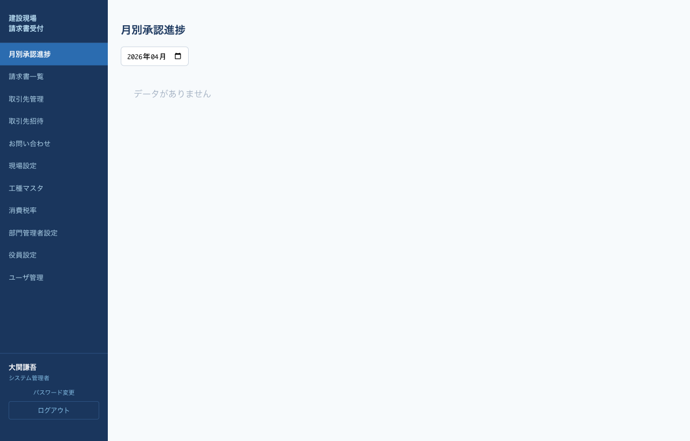

部門管理者の役割
部門管理者（部長）は、所長から申請された現場×月単位の請求書をまとめて確認し、一括で承認または否認します。システム全体で部門管理者は1名のみ設定できます（システム管理者が設定）。
所長のように1件ずつ明細入力するのではなく、現場×月の単位で一括承認するのが部門管理者の操作です。
Step 1. ログイン
/admin/login からメールアドレス＋パスワード＋OTPでログインします（2段階認証の詳細）。

管理者ログイン
Step 2. 月別承認進捗 → 申請案件を確認
1
ログイン後、左メニュー「月別承認進捗」をクリック。
2
上部の対象月セレクタで審査する月を選択します。

月別承認進捗：部長ビュー
3
ステージが 部長審査中 になっているカードが、所長から上がってきた審査対象です。承認詳細ボタンをクリックして詳細画面を開きます。
Step 3. 承認詳細画面で一括処理

承認詳細画面
承認詳細画面には以下が表示されます。
- 現場名・対象月・現在ステータス
- 請求書件数・税抜合計・税込合計（10%）
- 請求書一覧テーブル（連番／取引先／件名／税抜金額／承認状態／後から追加）
一括承認する場合
1
請求書一覧を精査し、問題がなければ一括承認するをクリック。ステージが 役員審査中 に変わり、役員にメール通知が飛びます。
一括否認する場合
1
否認するをクリックすると否認理由の入力エリアが開きます。
2
否認理由を必ず記入し（所長に通知されます）、否認を確定するをクリック。ステージが 所長承認中 に戻り、所長宛にメールが送信されます。

否認理由の入力エリア
一括操作のため、1件でも問題があれば月全体を否認することになります。個別修正が必要な場合も、否認コメントに「〇件目の××を修正してほしい」など具体的に記載してください。
請求書の一覧閲覧（任意）
左メニュー「請求書一覧」から、全現場・全ステータスの請求書を個別に確認することもできます（閲覧のみ）。CSVダウンロード機能もあります。
よくある質問
Q. 月別承認進捗に何も表示されない
所長がまだ「部長へ申請」を押していません。所長の進捗を確認してください。
Q. 承認ボタンが表示されない
ステージが 部長審査中 でない場合（例：まだ所長承認中、既に役員審査中）、部長の操作対象外のため承認ボタンは表示されません。